一个分数，几千个 token
2025 年 1 月，DeepSeek 发布了 DeepSeek-R1-Zero。它直接在基座模型上做 reinforcement learning（RL，强化学习）训练，中间没有经过监督微调。它的 reward 来自规则：一条规则检查最终答案是否正确，另一条检查推理过程是否写在 think 标签之间。经过几千步 RL 训练，它在 AIME 2024 数学竞赛上的 pass@1 从 15.6% 升到 71.0%，用多数投票时达到 86.7%。训练中它的回答也越来越长：模型学会了用更多 token 来推理。
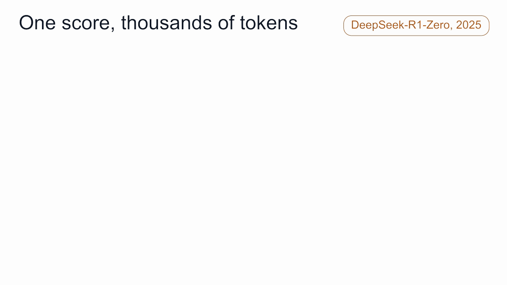
规则检查只给整段回答一个分数，而一段回答可能有几千个 token。训练时要调整的，却是每一个 token 的概率。LLM 的强化学习，归根到底在回答一个问题：
judge 只给整段回答打一个分。训练时，应该提高哪些 token 的概率，降低哪些 token 的概率？
强化学习有一套自己的术语：policy、state、action、reward、return、value、advantage、baseline、TD error、GAE、clipping、KL。每个术语都对应这个问题的一部分答案。本文用一个例子把它们依次讲一遍。后面两篇讲偏好对齐和 RLVR（基于可验证 reward 的强化学习）时，会直接使用这些术语。这是后训练系列的第四篇，上一篇介绍了 LoRA 和 QLoRA。
贯穿全文的例子
问题是 Is OpenAI open?（OpenAI 开放吗？）。名字里写着 open。截至本文写作时，准确的回答是部分开放：OpenAI 发布了开放权重的模型 gpt-oss-120b 和 gpt-oss-20b，采用 Apache 2.0 许可；它的旗舰模型只能通过 API 和自家应用使用。
假设模型已经写出 OpenAI is，接下来要选下一个 token。它最倾向于选最想当然的那个：
- open，概率 0.5，后面接 It's in the name.（名字里就写着）。judge 平均打 2 分（满分 10 分）。
- closed，概率 0.3，漏掉了开放权重的模型。judge 平均打 5 分。
- partly，概率 0.2，后面接 some open weights.（部分权重开放）。judge 平均打 9 分。
本文的数字都是示意值，但由它们算出的结果都是精确的。
循环：agent、environment、reward
在强化学习里，agent 做出 action，environment 给出反馈，reward 衡量 action 的好坏。对应到 LLM：
- agent 就是模型。模型对下一个 token 的概率分布叫作 policy，记作 π_θ，其中 θ 是模型权重。训练改变 θ，也就改变了 policy。
- environment 是模型以外的一切：模型收到的 prompt，以及给回答打分的 judge。
- judge 是 environment 中给完整回答打分的部分。它可以是用人类偏好数据训练出的 reward model（RLHF，下一篇的主题），可以是 R1-Zero 那样的规则检查器（RLVR，再下一篇的主题），可以是运行生成代码的单元测试，也可以是按评分标准打分的另一个 LLM。本文把它们统称为 judge，这样文中的术语对这几种情况都适用。
judge 之所以算在 environment 里，是因为模型改变不了它：RL 训练时 reward model 是冻结的，和 prompt 集合一样不会变。
循环的一轮是这样的：environment 给出一个 prompt，模型写出回答，judge 返回分数，分数用来更新 policy。下一轮用更新后的模型继续。
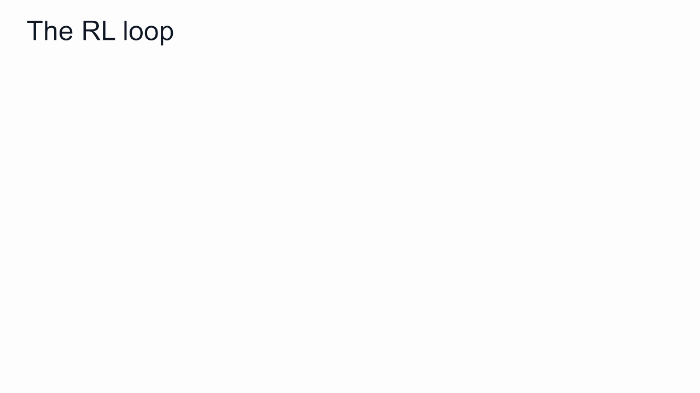
state、action、trajectory
在一段回答内部，强化学习按 token 逐步进行。
- state 是模型写下一个 token 之前看到的全部内容：prompt 加上已经写出的 token。在例子里就是 Is OpenAI open? 加上 OpenAI is。
- action 是下一个 token。policy 给每个候选 token 分配一个概率（open 0.5、closed 0.3、partly 0.2），再通过 sampling 按概率选出一个。
- 选出的 token 接到 state 后面，形成新的 state。如此重复，直到回答结束。完整的一段回答叫作 trajectory，也叫 rollout 或 episode。
LLM 就是一个 policy：prompt 加上已写出的 token 是 state，下一个 token 是 action。
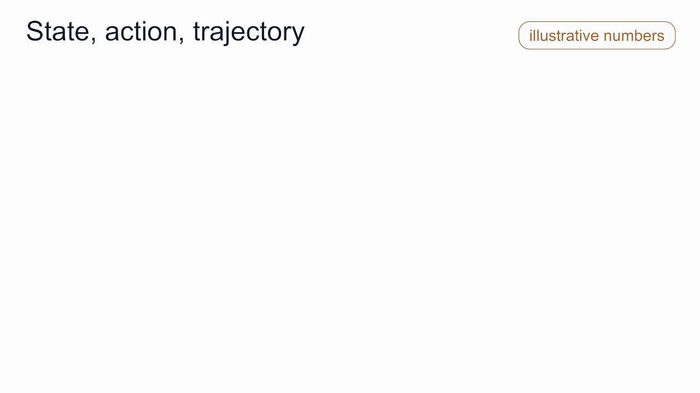
reward 与 return
假设模型采样到了 open，写完的回答是 OpenAI is open. It's in the name. judge 读完整段回答，打了 2 分。
reward 是每一步得到的分数。在 LLM 的强化学习中，除了最后一个 token，每个 token 的 reward 都是 0，最后一个 token 得到 judge 的分数。这种 reward 叫作 sparse reward，也叫延迟 reward。写到一半的回答没有确定的分数：OpenAI is 后面可能写好，也可能写坏。如果要给每一步打分，就需要一个用逐步标注数据训练的过程 reward model（process reward model）。DeepSeek-R1 的报告列出了作者在这条路上遇到的问题：一般推理中很难界定什么算一步；判断中间步骤的对错，自动标注效果不好，人工标注又难以扩大规模；用模型来逐步打分，会引发 reward hacking。只给完整回答打分，成本低，也不容易被钻空子，还让模型可以自己摸索推理的方式。R1-Zero 越来越长的推理过程，就是它自己摸索出来的。
return 是从某个 token 起到回答结尾的全部 reward 之和。一般的强化学习会给后面的 reward 乘上一个小于 1 的折扣因子 γ，越往后的 reward 折扣越多，这对持续时间很长的任务有意义。LLM 的回答会结束，分数也属于整段回答，所以 LLM 的强化学习取 γ = 1，不打折扣。如果 γ 小于 1，靠前的 token 分到的分数会更少，哪怕它决定了整个回答（例子里的 open 就是这样）；而且回答越短，折扣越少，模型会因此偏向写短回答。
γ = 1 且只有结尾一个 reward 时，每个位置的 return 都等于最终分数：OpenAI 是 2，is 是 2，open 是 2，name 也是 2。
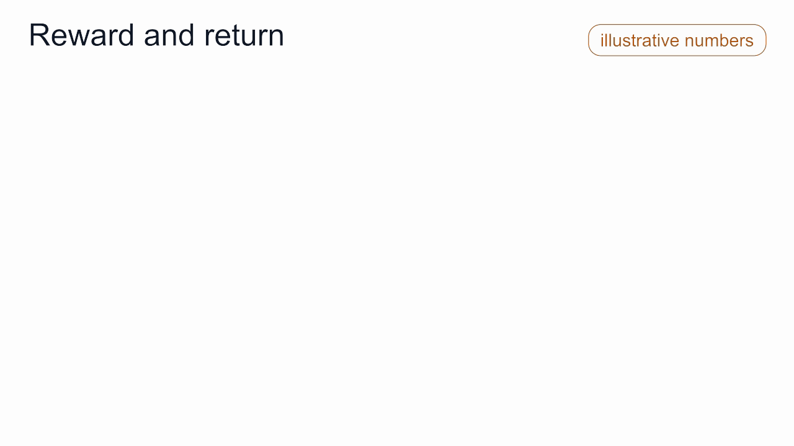
所以只看 return，分辨不出哪个 token 好、哪个 token 差。这段回答里每个 token 拿到的都是同一个 2。后面的术语，都是为了把这个分数分到不同的 token 上。
sparse reward 还有一个代价：只看结果的 judge，看不到结果是怎么得出来的。OpenAI is partly. It's in the name. 结论对，理由错，只看结论的 judge 会给它满分。碰巧猜对、推导有错但数字碰巧正确、文字越写越难读，这些情况都同样能拿到分。DeepSeek 报告说，R1-Zero 的推理可读性差，还会混用多种语言；DeepSeek-R1 为此加入了少量监督的冷启动数据和语言一致性 reward。训练总体上仍会偏向合理的推理，因为每次更新依据的是大量样本的平均，而合理的推理比碰运气更常得分。不过这只是统计上的倾向。可读性也一样：只有 reward 明确考虑可读性，它才会计入分数。
value、Q 和 advantage
回到 state OpenAI is。让模型从这里续写很多次，每写完一段都交给 judge 打分。图中画了其中十次：按 policy 的概率，5 次以 open 开头，3 次以 closed 开头，2 次以 partly 开头。即使开头相同，后面的写法也不同，所以分数有高有低：
- 以 open 开头的 5 个回答，分别得 3、1、2、1、3 分；
- 以 closed 开头的 3 个回答，分别得 5、4、6 分；
- 以 partly 开头的 2 个回答，分别得 10、8 分。
从这十个分数可以算出三个量。记号里的 s 表示 state，这里就是 OpenAI is；a 表示 action，也就是下一个 token，这里是 open、closed、partly 三者之一。
- action value Q(s, a)：在 state s 下先写 token a，之后照常写下去，能得到的平均分。把以同一个 token 开头的回答分为一组，求组内平均：Q(open) = (3 + 1 + 2 + 1 + 3) / 5 = 2，Q(closed) = (5 + 4 + 6) / 3 = 5，Q(partly) = (10 + 8) / 2 = 9。前面例子里给三种回答的 2、5、9 分，就是这三个平均分。
- value V(s)：在 state s 下不指定下一个 token，模型按平时的方式写下去，能得到的平均分。十个分数一起平均：(3 + 1 + 2 + 1 + 3 + 5 + 4 + 6 + 10 + 8) / 10 = 4.3。它也等于用 policy 的概率给三个 Q 加权：V = 0.5 × 2 + 0.3 × 5 + 0.2 × 9 = 4.3。
- advantage A(s, a) = Q(s, a) − V(s)：在 state s 下写 token a 的平均分，减去不指定 token 时的平均分，也就是写 a 比模型平时的水平高多少或低多少。例如 A(open) = Q(open) − V = 2 − 4.3 = −2.3，表示先写 open 的回答比平均水平低 2.3 分；同理 A(closed) = 5 − 4.3 = +0.7，A(partly) = 9 − 4.3 = +4.7。
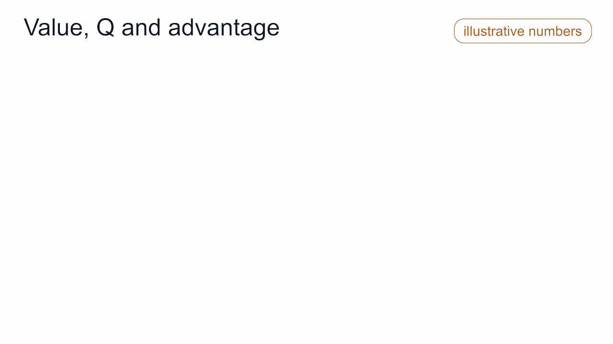
图里把三者画在一起。十个采样回答落在各自的分数上：同一分支上的点收拢到它们的平均，得到这条分支的 Q；十个点一起平均，得到 V。state 画在 V = 4.3 的高度上，从 V 线指向每个 Q 的箭头就是 advantage。
训练中真正起作用的是 advantage。它有四个性质值得记住。
它回答了原始分数回答不了的问题。 judge 给 open 打了 2 分。2 分算好还是差，要看模型在这个位置平时能得多少分。reward 是绝对分数，advantage 则是拿它和模型在这个 state 下的预期作比较。
正负号是方向，大小是幅度。 A 大于 0，提高这个 token 的概率；A 小于 0，降低它的概率。|A| 越大，调整越多。
它以当前模型为参照。 closed 的回答比 partly 差，却得到 +0.7，因为它高于模型目前的平均分 4.3。等模型变好、平均分超过 5，同一个 closed 的 advantage 就会变成负的。
按概率加权，它的平均值是 0。 0.5 × (−2.3) + 0.3 × 0.7 + 0.2 × 4.7 = −1.15 + 0.21 + 0.94 = 0。一次更新没法提高所有 token 的概率，只能把概率从低于平均的 token 转移到高于平均的 token。
advantage 表示：在这个位置，写这个 token 比模型平时的写法好多少。
不同算法的一个主要区别，是 V 从哪里来。PPO 另外训练一个网络（critic）来预测 V。R1-Zero 使用的 GRPO，对同一个 prompt 采样一组回答，用它们的平均分代替 V。下一篇会介绍这两种算法。
baseline
训练时拿不到 Q，只能看到一个个采样回答和它们的分数 R。所以实际做法是用 R 减去一个 baseline，来估计每个回答的 advantage；baseline 通常取 V。图中五个 open 回答的分数是 3、1、2、1、3，R − V 分别是 −1.3、−3.3、−2.3、−3.3、−1.3，平均为 −2.3，正好等于 Q − V。
例子里 judge 的分数都是正的。如果从 0 算起，每个采样回答都会被往上推，open 也不例外。它只是被推得比其他回答少，正确的方向要等大量样本相互抵消后才能显现。从 V 算起，每个样本本身就指向正确的方向：低于平均的回答往下压，高于平均的回答往上推。
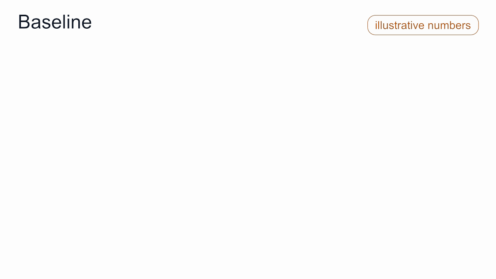
只要 baseline 与采到哪个 token 无关，减去它就不会改变平均的更新，改变的只是噪声。在这个例子的模拟中，以 0 为 baseline 和以 V 为 baseline，平均更新完全相同；以 V 为 baseline 时，方差约为前者的五分之一。
baseline 改变的是更新的噪声，更新的方向保持不变。
GRPO 的组内平均分和 PPO 的 critic，都是这个意义上的 baseline。
credit assignment：TD error 与 GAE
前面的 advantage 只针对一个决定，也就是 OpenAI is 后面的那个 token。真实的回答有很多 token，每个 token 都要分到自己的一份。判断分数该归到哪些 token 上，叫作 credit assignment。
沿着采样到的回答，看 V 如何变化。写 open 之前，V = 4.3。写下 open 之后，预期分数变成 2，因为写 open 的回答大约得 2 分。之后直到结尾，V 都不再变化。
TD error（temporal-difference error）衡量每个 token 处的这种变化：δ = r + V(下一个 state) − V(当前 state)。它在 open 以外的位置都是 0，在 open 处是 0 + 2 − 4.3 = −2.3。预期分数在哪个 token 处下降，责任就归给哪个 token。It's in the name 不承担责任，因为写到那里时，结果已经定了。
credit 归于预期分数发生变化的那个 token。
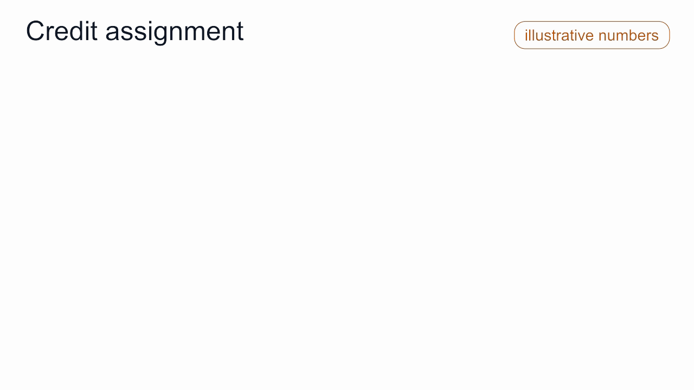
这要求 V 是准确的，而实际中的 V 是学出来的估计值。GAE（generalized advantage estimation）引入了一个取值在 0 到 1 之间的参数 λ。λ = 0 时，每个 token 的 advantage 就是它自己的 TD error，责任全部落在 open 上。λ = 1 时，每个 token 的 advantage 是最终分数减去该 token 处的 V，于是 OpenAI、is、open 都分到 −2.3。这会把责任分给并没有做错的 token，因为每个回答都以 OpenAI is 开头；采样多了，这部分噪声会平均掉。λ = 0 完全依赖 V，λ = 1 只依赖最终分数；PPO 中 λ 常取 0.95 左右。
GRPO 没有逐 token 的 V。它让一个回答的所有 token 共用同一个 advantage，也就是这个回答的分数与同组回答比较的结果。在我们的例子里，十个 token 会分到同一个负值，It's in the name 也包括在内。
policy gradient
每个 token 有了 advantage，更新规则一句话就能说清：advantage 为正的 token，提高它的对数概率；advantage 为负的 token，降低它的对数概率；调整幅度与 advantage 成正比。这就是 policy gradient。在我们的 state 下，每个候选 token 的 logit 的变化量与 π × A 成正比。
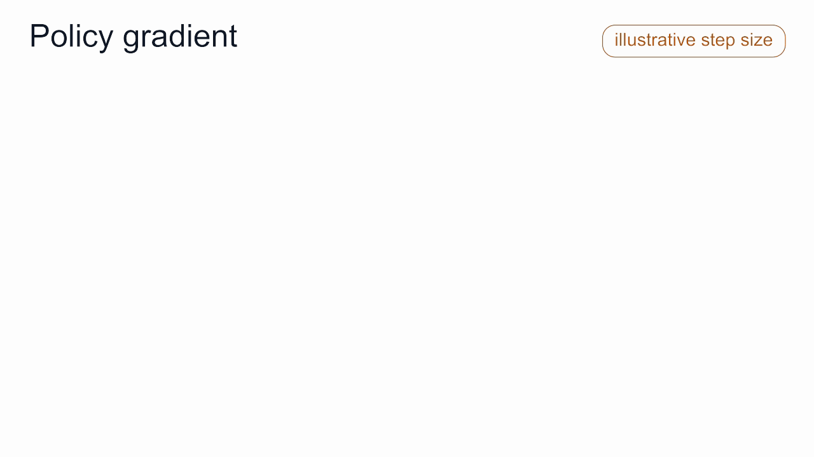
按期望梯度精确地更新两步（步长是示意值），概率从 0.50 / 0.30 / 0.20 变成 0.15 / 0.36 / 0.49，再变成 0.04 / 0.11 / 0.86；V 从 4.3 升到 6.5，再升到 8.3。第一步中 closed 的概率上升，因为 5 高于 4.3。V 超过 5 以后，closed 低于平均，概率开始下降。advantage 始终以当前模型为参照，模型变好，标准也随之提高。
exploration
更新只能利用模型实际写出的回答。如果模型每次都选概率最高的 token，也就是 greedy decoding，它每次都写 open，只会看到 2 分左右的分数。平均分是 2，open 的 advantage 是 0，什么都不会改变。它永远发现不了 partly 能得 9 分。
以温度 1 做 sampling，模型有时会写出 closed 或 partly。这些样本显示出其他分支的分数更高，policy 正是靠它们改变的。这就是 exploration：policy 必须尝试概率较低的 token，所以强化学习训练时用 sampling 生成回答，而不用 greedy decoding。
小步更新：ratio、clipping 与 KL
还有两个机制，用来让每次更新保持在小范围内。
ratio 与 clipping。 policy gradient 假设回答来自当前的 policy，这样的数据叫作 on-policy 数据。采样成本很高，所以 PPO 一类的训练会用当前模型采一批回答，保存一份冻结的副本 π_old，然后在这批数据上更新好几步。几步之后，模型 π 已经偏离了 π_old。importance ratio ρ = π / π_old 衡量每个采样 token 的概率变化了多少，并据此调整它在更新中的权重。一旦 ρ 超出 [1 − ε, 1 + ε] 的范围，clipping 就停止这个 token 的更新。取 ε = 0.2、π_old(partly) = 0.2，那么 +4.7 的 advantage 在这批数据上最多把 π(partly) 推到 0.24，再往上就没有梯度了。要继续提高，需要重新采样。
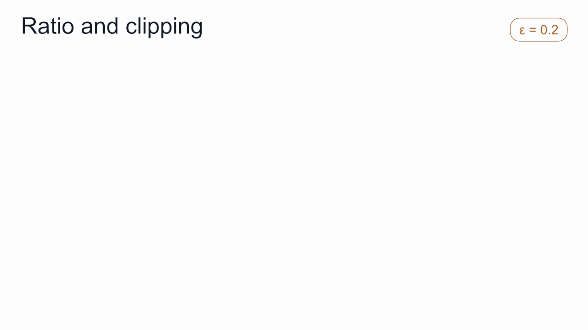
KL penalty。 judge 只对它熟悉的那类回答打分可靠。假设 judge 喜欢恭维：它给 partly. Some open weights. 打 9 分，给 partly. What a brilliant question!（好问题！）打 9.6 分。参考模型 π_ref，也就是 RL 之前的 SFT 模型，有 5% 的概率写出恭维的版本。如果没有约束，强化学习会把 policy 推向恭维。KL penalty 从 reward 中减去 β × KL(π‖π_ref)，KL 衡量 policy 的分布偏离参考模型有多远。取 β = 1，当 policy 写恭维回答的比例从 5% 升到 90%，judge 的平均分只从 9.03 升到 9.54，KL 项却涨到 2.38，R − β × KL 从 9.03 降到 7.16。偏向恭维反而降低了优化目标，policy 就会留在参考模型附近。实际系统中 KL 按 token 逐个计算，β 也小得多；这里取 β = 1 是为了让效果看得清楚。
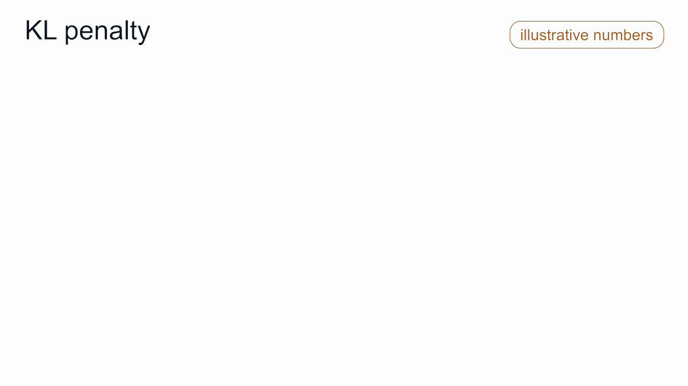
这个恭维的回答是 reward hacking 的一个小例子：policy 靠迎合 judge 的偏好来提高分数，回答本身并没有变好。KL penalty 限制了它能偏离多远。
总结
整个循环可以画在一张图里：state、policy 的分支、action、reward、V、Q、advantage，以及重新调整分支的更新。
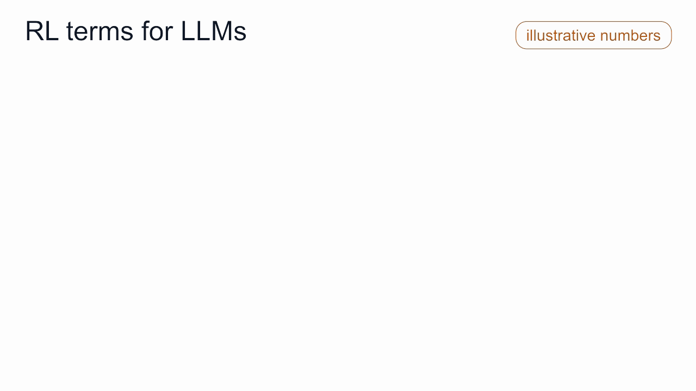
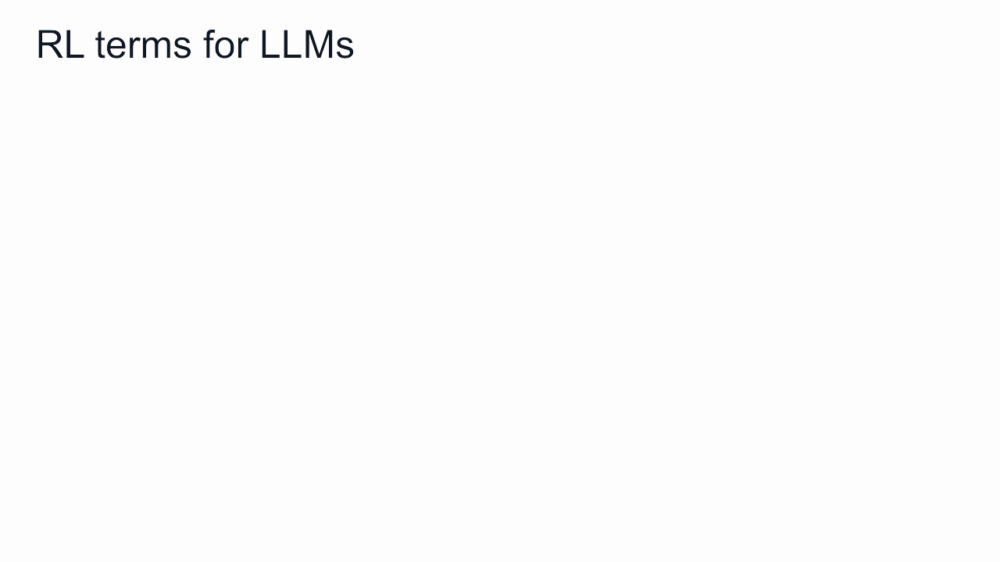
- LLM 就是 policy。prompt 加上已写出的 token 是 state，下一个 token 是 action，整段回答是一条 trajectory。
- judge 只给写完的回答打分。reward 是稀疏的，γ = 1 时每个 token 的 return 都是这一个分数。
- V 是从某个 state 出发的平均分，Q 是写下某个 token 之后的平均分，advantage A = Q − V 表示这个 token 是否好于模型平时的选择。
- baseline（V 或组内平均分）不改变更新的方向，只降低更新的噪声。
- TD error 和 GAE 把 credit 分给预期分数发生变化的 token。
- policy gradient 提高 advantage 为正的 token 的概率，降低 advantage 为负的 token 的概率。exploration 提供它学习所需的样本。
- ratio 和 clipping 限制在同一批数据上的更新幅度，KL penalty 让 policy 留在参考模型附近，那里的 judge 才可信。
下一篇介绍偏好对齐：reward model 如何从人类偏好数据中训练出来，PPO、GRPO 和 DPO 又如何使用它。用本文的术语来说，PPO 用 critic 学习 V，GRPO 用组内平均分代替 V，DPO 跳过强化学习的循环，直接从偏好数据中学习。